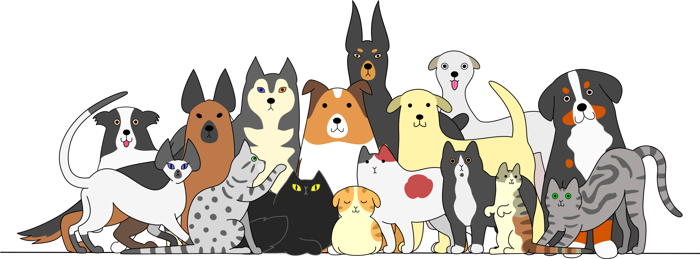

<!DOCTYPE html>
<html>
  <head>
    <meta charset="utf-8">
    <title>Miracle Makers</title>
    <link href="about.css" rel="stylesheet" type="text/css" />
  </head>
  <body>
    <section id="main">
      <nav>
        <a href = "#" class = "logo">
          
        </a>
        
        <span class="menu-space"></span>

        <ul class="menu">
          <li><a href = "./home.html">Home</a></li>
          <li><a href = "./index.html">Galary</a></li>
          <li><a href = "./apply.html">Application</a></li>
          <li><a href = "./aboutus.html">About Us</a></li>
        </ul>
        <a href = "./contact.html" class = "hey"><strong>Say Hi!</strong></a>
      </nav>
    </section>
    <br><br><br><br><b<br><br>
<h1 class="title">About MiracleMakers</h1>
<br><br><br><br><br><br><br><br>
<section class="content">
  <div class="image">
    
  </div>

 </section>
 <br><br><br><br><br><br><br><br><br><br>
        <form id="survey-form">
            <p>Do you treat your pet as if it were a member of your family? Of course, you do.
                Animal adoption can help you find your next best friend while also saving a life. Over 6,000,000 
                dogs and cats were killed on US roadways last year. Thousands of animals have been hurt on 
                the road throughout the world, and they are fighting for survival every day. This is the main 
                reason we've come to help them. We are a group of animal lovers and proponents. We want to 
                make sure that everyone has access to high-quality, natural medicines at a fair price.
                Sharing your life with a pet may be a joyful experience, but it also needs you to take charge of 
                your own skills. There are several advantages to owning a pet. If you always had this 
                companion with you, your social life would improve, keeping you healthy, involved, and stressfree. You feel better when you have a friend you adore. Taking care of a pet may provide people 
                of all ages a feeling of purpose and fulfillment, as well as reduce loneliness. You may take your 
                energetic dog for a stroll or even to a dog park to meet new people. According to research, 
                stroking a dog can help to reduce the production of the stress hormone cortisol. You will never 
                be scared since your pet will always be there for you. Animals provide unconditional affection in 
                addition to psychological, emotional, and physical benefits.</p>
            <p>Did you know that over 1,000 people per hour run a search right here looking to adopt a pet? Pet adoption is 
                quickly becoming the preferred way to find a new dog, puppy, cat or kitten. Best of all, there are so many 
                benefits when you adopt a dog or adopt a cat over buying. For instance, pet adoption will almost always be 
                more affordable than buying a puppy for sale from a breeder or finding a kitten for sale from a litter. There
                are more benefits as well. Since pets in rescues and shelters usually come from a home where the owners ran 
                out of money, got divorced, or had to move, it's common to find that the dogs and cats on our website are 
                already housetrained, good with kids, or do well with other pets. People are finding out that buying a puppy 
                for sale from a breeder isn't all it's cracked up to be, and the dogs and cats don't leave the organization 
                without having their shots and being taken to the vet. That means less stress, and more savings! So what are
                you waiting for? Go find that perfect pet!</p>
        </form>
  
</body>
</html>
